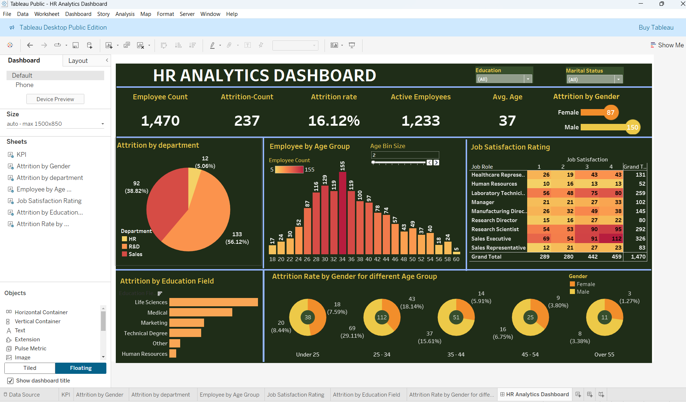

Dashboard Purpose: designed for monitoring and analyzing workforce dynamics within an organization. It provides deep insights into
attrition, age distribution, job satisfaction, gender analysis, and educational backgrounds.
Tool Used: Tableau desktop Public
This HR Analytics Dashboard provides a comprehensive overview of workforce metrics, enabling real-time insights into
employee attrition, headcount, demographics, satisfaction, and education trends.
The dashboard is designed to help HR and organizational leaders:
i. Monitor attrition trends across departments and demographics
ii. Identify at-risk groups based on age, gender, or job role
iii. Understand job satisfaction levels by role to improve employee engagement
iv. Support workforce planning by visualizing age and educational distribution
v. Drive data-informed HR strategies to improve retention and productivity

Dashboard Purpose: To analyze retail sales trends across various dimensions like product,
age group, gender, and geography.
Tool Used: Tableau desktop
This dashboard offers a comprehensive and intuitive overview of retail performance, combining revenue
trends, product rankings, customer demographics, and geographical insights. Its interactive design
empowers users to:
i. Identify best-selling products and categories
ii. Understand customer profiles by age and gender
iii. Monitor sales performance over time and across regions
Tool Used: Tableau Public
Purpose: This Ecommerce Sales Dashboard provide comprehensive dashboard analysis that
tracks key performance indicators (KPIs) for an online retail business. It presents
year-to-date sales insights across multiple markets, product categories, and
customer segments.
i. Sales & Business Development can identify declining categories and fast-growing
markets for expansion.
ii. Marketing & Customer Engagement can tailor promotions by market,
adjust marketing strategies for underperforming categories.
iii. Strategy and product management can evaluate business health, Prioritize development,
updates, or retirement of certain product lines.